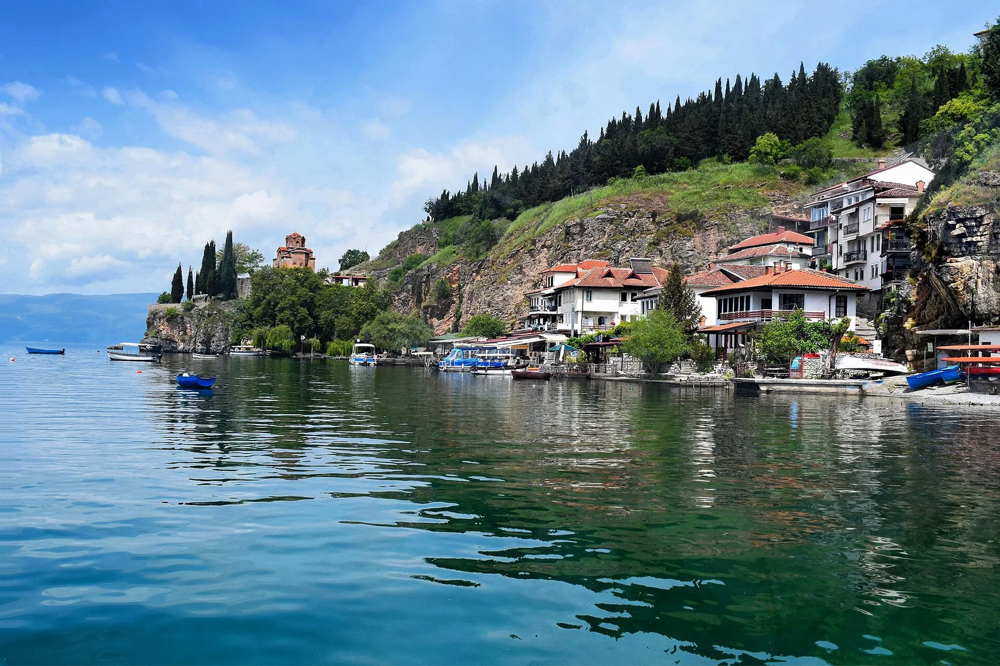

Lac d’Ohrid — Kaneo
Ohrid, Macédoine du Nord · baignade, kayak, paddle

Petite plage au pied de l’église Saint-Jean de Kaneo, perchée sur les rochers au bord du lac d’Ohrid. L’un des plus vieux et profonds lacs d’Europe, classé à l’UNESCO, aux eaux claires et riches en espèces endémiques.
- Lieu
- Ohrid, Macédoine du Nord
- Niveau
- Débutant
- Activités
- baignade, kayak, paddle
- Type d'eau
- lake
- Coordonnées
- 41.11, 20.79 (position approximative du secteur)
Dangers à connaître
- Bateaux de promenade près des pontons et de la côte.
- Rochers et fond qui plonge vite près des falaises.
Le conseil d'Ocean Buddy
Loue un kayak ou un paddle pour longer les falaises jusqu’à la vieille ville, tôt le matin quand le lac est calme.
Ouvrir dans Ocean Buddy Télécharger sur l'App Store
Source : Fiche Ocean Buddy · septembre 2026 · à vérifier localement.